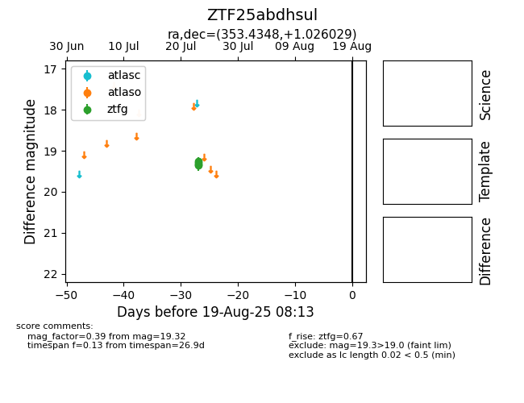

Target ZTF25abdhsul at 2025-08-06 17:45, see:
FINK: fink-portal.org/ZTF25abdhsul
Lasair: lasair-ztf.lsst.ac.uk/objects/ZTF25abdhsul
ALeRCE: alerce.online/object/ZTF25abdhsul
alt names
ZTF25abdhsul (ztf,fink)
coordinates:
equatorial (ra, dec) = (353.4348,+1.02603)
galactic (l, b) = (86.2194,-56.20469)
photometry
last ztfg=19.32
4 ztfg detections
